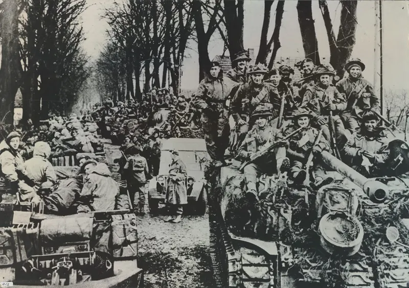
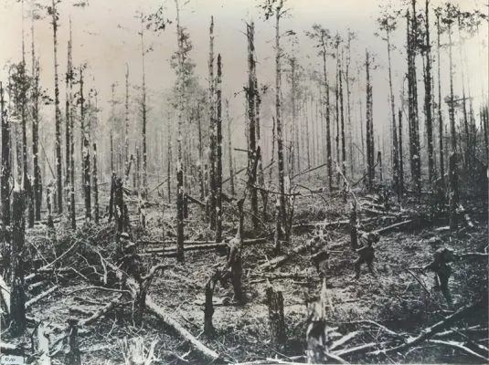

Nieuws ·
Lezing: The forgotten battle of the Reichswald forest

Op 8 februari 1945 trokken vanuit de omgeving van Nijmegen en Groesbeek meer dan 50.000 Britse en Canadese soldaten naar het Reichswald om de Duitse verdediging daar te vernietigen. Dit bos werd één van de meest heftige strijdtonelen uit de Tweede Wereldoorlog in Europa. Op zaterdag 8 februari 2025 presenteren Adrian en Dawn Leyland Bridge in het Vrijheidsmuseum hun boek over deze historische veldslag.
Adrians vader was 18 jaar toen hij met de 15th Scottish Division het Reichswald binnendrong. Zijn herinneringen aan deze tijd vormen de inspiratie voor het boek dat zijn zoon Adrian en schoondochter Dawn schreven. “Britain’s Forgotten Battle: The Reichswald Forest Campaign, 1945”. Dit boek geeft een nieuw overzicht over een van de laatste, bloederige veldslagen aan het einde van de Tweede Wereldoorlog in Europa, waar uiteindelijk meer dan 200.000 geallieerde soldaten bij betrokken waren. Het boek gaat uit van bronnen uit Britse, Canadese en Europese musea en archieven.
Adrian L. Bridge studeerde geschiedenis aan the British Academy, waar hij ook zijn master en leraarbevoegdheid haalde en onderzoek deed. Hij heeft bijna 20 jaar lesgegeven en werkt parttime voor de universiteit van Cambridge. Dawn L. Bridge studeerde geschiedenis en is gespecialiseerd in vrouwengeschiedenis. Over dit onderwerp heeft ze exposities en lezingen gegeven bij Cheshire Women’s Institutes en Mothers’ Unions.

Op zaterdag 8 februari vindt de lezing plaats in het Vrijheidsmuseum. Inloop is vanaf 14:00 en om 14:30 begint het programma. Na de lezing is er ruimte voor vragen uit het publiek. Na afloop kunt u napraten in het café of nog kort het museum bezoeken. Om 17:00 sluit het museum. Let op! De lezing is in het Engels. Tickets kosten € 9, – p.p. en zijn verkrijgbaar via de website.
Locatie: Vrijheidsmuseum, Wylerbaan 4, 6561 KR Groesbeek
Datum: zaterdag 8 februari, starttijd 14:30